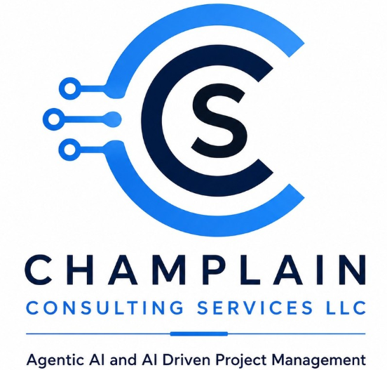

Growth without extra headcount
Find where AI can support lead conversion, customer response, and growth opportunities while keeping your team focused on higher-value work.

Champlain Consulting Service Book a callAgentic AI × Project Delivery × Business Outcomes
Champlain Consulting Services helps SMB owners, solopreneurs, and growth-oriented business leaders turn Agentic AI into practical automation, better customer response, and measurable operating outcomes.
Built from enterprise-scale transformation experience, adapted for practical SMB execution.
The SMB AI gap
Most businesses do not need another tool demo. They need a calm, structured way to find the highest-value use cases, define ownership, manage risk, and measure real business impact.
Find where AI can support lead conversion, customer response, and growth opportunities while keeping your team focused on higher-value work.
Identify repetitive workflows, handoffs, and reporting friction that can be simplified or automated.
Use project delivery discipline, governance, and KPI design before investing in implementation.
The better future state
Start with business process readiness, then design AI agents around revenue, customer experience, operational cost, and productivity metrics. The result is a guided path from opportunity assessment to measurable implementation.
Frameworks
AIM Framework™
Assess business processes, implement AI agents and intelligent automation, then measure ROI and business outcomes.
SCALE AI™ Framework
A structured way to connect AI opportunities to efficiency, insight, and revenue expansion.
AI Solutions for Solopreneurs and SMBs
Choose a practical starting point for automation, customer response, sales follow-up, marketing content, or internal operations. Each solution can connect back to the AI Readiness Assessment and roadmap.
Scheduling, reminders, follow-ups, and daily task support for owners who need more leverage.
Starting setup fee $899; monthly $99.
Turn raw ideas into ready-to-post content across formats and platforms.
Starting set-up fee $399; monthly $99.
Targeted outreach that qualifies inbound leads and enriches contact data for CRM.
Starting setup fee $1,199; monthly $299.
Custom automation for repetitive operational work, reporting, handoffs, and internal workflows.
Starting at $1,999.
Scheduling, reminders, and rescheduling via WhatsApp or SMS. No admin staff required.
WhatsApp and web integrated. Handles FAQs, escalations, and ticket routing. Runs 24/7 without staff.
Custom Q&A agent trained on company SOPs and documents. Deployed on Slack or WhatsApp.
Agentic PMO Operating Model™
Bring AI assistance into the project management areas where leadership teams need stronger signals, faster reporting, and clearer benefits tracking.
Surface portfolio health and delivery signals.
Track risks, assumptions, issues, and dependencies earlier.
Expose planning friction and capacity constraints.
Improve decision support and leadership visibility.
Connect delivery work to measurable business outcomes.
Primary offer
A focused diagnostic for SMB owners and business leaders who want to identify where Agentic AI can improve revenue, customer experience, operational cost, and productivity before committing to implementation.
Book a ConsultationBusiness outcomes
Support lead conversion, market strategy, customer engagement, and business growth opportunities.
Find workflow friction and manual effort that can be improved through intelligent automation.
Accelerate response times and create more consistent service interactions.
Reduce manual workload so teams can focus on higher-value decisions and execution.
Credibility
Ravi Shankar brings a rare mix of AI, data, cloud, PMO, governance, and business transformation experience to SMB teams that need measurable execution rather than hype.
How it works
Review business processes, bottlenecks, customer friction, and growth opportunities.
Rank AI opportunities by business value, readiness, complexity, and operational impact.
Create a strategy roadmap with recommended agents, automation, KPIs, and ownership.
Design and deploy the first AI-assisted workflow or agent implementation sprint.
Track ROI, lead conversion, response time, manual workload, and productivity outcomes.
FAQ
That is exactly why the assessment exists. It identifies the best first use cases based on revenue potential, efficiency, readiness, and implementation effort.
No. The offer is designed for SMB owners and growth-oriented leaders. The advantage is bringing enterprise-grade delivery discipline into a practical SMB-ready model.
The offer path is assessment, strategy roadmap, and agent implementation. The first step is to identify the highest-value and most practical starting point.
Possible metrics include reduced manual workload, improved lead conversion, faster customer response times, lower operational cost, and increased employee productivity.
Ready to turn AI interest into a practical roadmap?
Free 30 minutes. We will review your business and send you a written action plan — no obligation.
contactus@champlainconsultingservices.com
By appointment
Champlain Consulting Services LLC · USA
Monthly playbooks on AI, automation, and small-business growth.